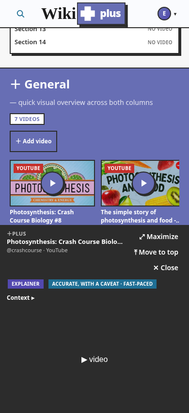
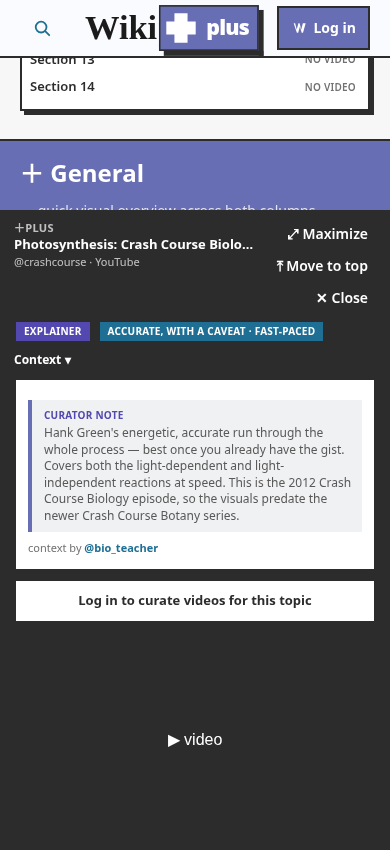
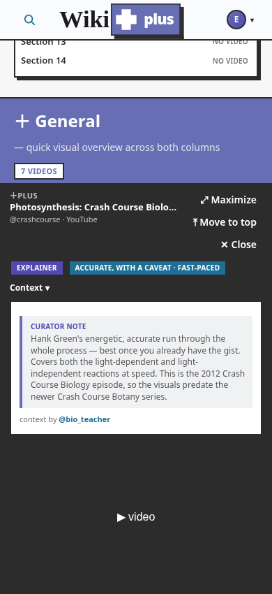
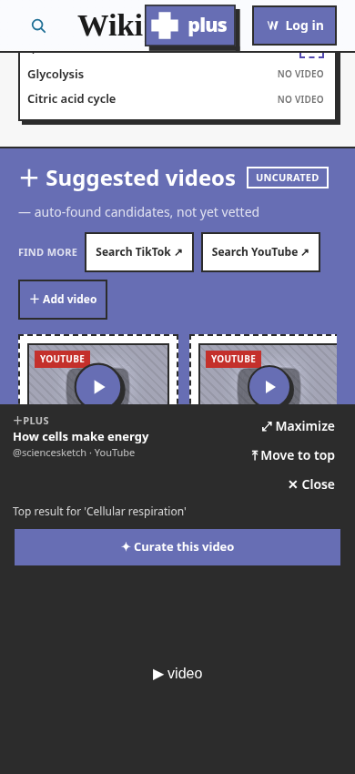
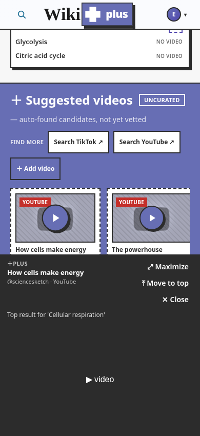
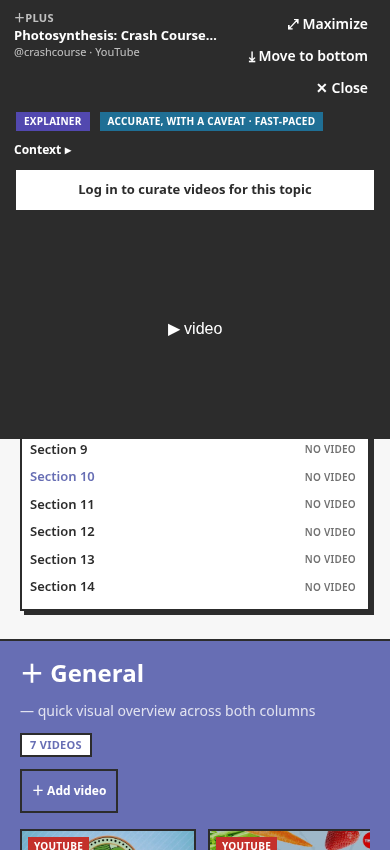

Home — landing page home
Daylight Projector header + Find-a-topic search + example topics.


Daylight Projector header + Find-a-topic search + example topics.
The projector beam + lockup + auth control, scroll-top.


The full projector beam over the article↔plus seam.


The collapsed Tier-C card after scrolling past the burn threshold.


The icon-disclosure search expanded on the narrow header: the wordmark collapses to the "+" glyph and the login to icon-only ("W" logged-out / avatar logged-in) so the field flexes between them with no overlap.


Article ↔ plus columns, top to bottom.


The viewport after scrolling: slim header over the article body.


The video-stats / curation-state card.


Section list with curated/suggested badges.


Human-curated clips (Photosynthesis).


Auto-found candidates on an uncurated topic.


Uncurated topic with no candidates yet.


The dialog player + curation note, opened from a curated tile. Desktop-only: on mobile/tablet (< lg) curated playback uses the unified mobile dock (issue #120).


The corner dock, opened from a suggested candidate. Desktop-only: on mobile/tablet (< lg) candidate playback uses the unified mobile dock (issue #120).


Curated clip docked at the bottom: title-bar credit + chips + 'Context ▸'. Logged-out adds the join nudge.

The 'Context ▸' expander opened: full note + 'context by' on a light surface, scrolling inside the bounded region. Logged-out arm shows the join nudge after the note.


Candidate docked: one-line match reason in place of the note. Logged-out shows '✦ Curate this video'; signed-in is metadata-only.


A 9:16 Short docked: height-capped at min(55vh,420px), centered + letterboxed on black — the vertical fit at 390px.
The park toggle's other state: the dock pinned to the top, the article reflowed below it (the toggle now reads 'Move to bottom').

Rotated to a landscape window (740×390), a 16:9 clip maximizes to fill the viewport via CSS (not native fullscreen — §6.5); chrome condenses to a thin Close bar.
A 9:16 Short maximized via the explicit ⤢ button: fills the full portrait height upright, centered + letterboxed (a Short's best frame regardless of device orientation).
The honest #19 missing-article recovery state.


The persistent data-handling notice.


Logged-out gate vs the real add form.


Public profile (viewer arm) / own profile (My curations).


No scenes match the current filters.